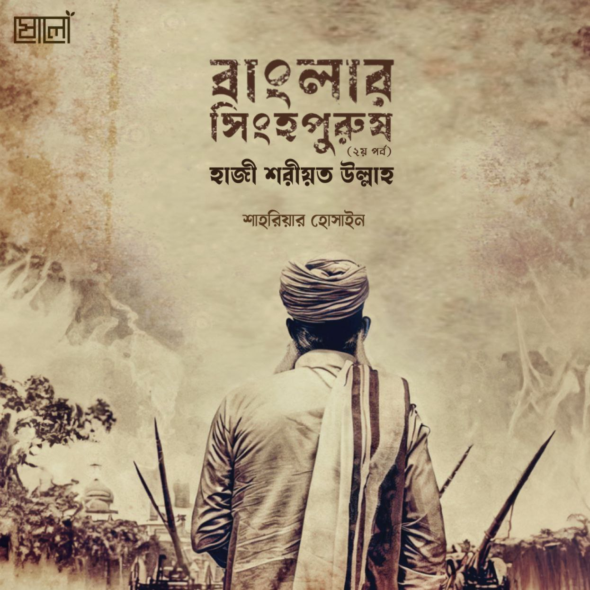

.
ফরজ! শব্দটি শুনলেই আমাদের এমন কিছু বিধিবিধান মাথায় আসে, যা অবশ্যই পালন করতে হবে। অর্থাৎ অবশ্যপালনীয় বিধানসমূহ। আমরা আজকে এমন একটি বিপ্লব সম্পর্কে জানব, যার নামই ছিল ফরায়েজী আন্দোলন। ফরায়েজী আন্দোলন হলো একটি ধর্মীয় ও রাজনৈতিক আন্দোলন, যা ঊনিশ শতকের প্রথম দিকে সূচিত হয়েছিল। ফরায়েজী আন্দোলনের মুখপাত্র ছিলেন বিখ্যাত সমাজ সংস্কারক হাজী শরীয়তুল্লাহ রহিমাহুল্লাহ। আজ আমরা জানব ফরায়েজী আন্দোলন এবং সেই আন্দোলনের নেতা হাজী শরীয়তুল্লাহ সম্পর্কে।
.
হাজী শরীয়তুল্লাহ রহিমাহুল্লাহর জন্ম ১৭৮১ সালে তৎকালীন ব্রিটিশ ইস্ট ইন্ডিয়া কোম্পানির শাসনাধীন বেঙ্গল প্রেসিডেন্সির ফরিদপুর জেলার চর শামাইল গ্রামের এক তালুকদার পরিবারে। ছেলেবেলায় তিনি বাড়ি থেকে পালিয়ে চলে আসেন কলকাতায়। হজের উদ্দেশ্যে তাঁর গুরু মাওলানা বাশারত আলীর সাথে ১৭৯৯ খ্রিষ্টাব্দে মক্কায় গমন করেন। ১৮১৮ খ্রিষ্টাব্দে সেখান থেকে দেশে ফিরে আসেন। আরবি ভাষায় পণ্ডিত ছিলেন তিনি।
.
মক্কায় থাকাকালীন হাজী শরীয়তুল্লাহ সংকল্পবদ্ধ হন যে, দেশে ফিরে সমাজ সংস্কারে মনোযোগী হবেন। তাই মক্কা থেকে ফিরেই সমাজ সংস্কারে মনোনিবেশ করেন। ঊনিশ শতকের প্রথম দিকে এ অঞ্চলে তাঁর নেতৃত্বে যে আন্দোলন গড়ে উঠে, তা-ই ‘ফরায়েজী আন্দোলন’ নামে পরিচিত।
.
এই আন্দোলনের মাধ্যমে হাজী শরীয়তুল্লাহ যে ফরজের ওপর বিশেষ গুরুত্ব আরোপ করেছেন, তা ছিল পবিত্র কুরআনে বর্ণিত পাঁচটি অবশ্যপালনীয় (ফরজ) রুকন বা খুঁটি। এগুলো হচ্ছে: ঈমান বা আল্লাহর একত্ব ও রাসূলুল্লাহ ﷺ-এর রিসালাতে বিশ্বাস, সালাত, সাওম, হজ ও যাকাত। ইসলামে অনুমোদিত নয় এমন সব বিশ্বাস, আচার-অনুষ্ঠান বর্জন করে দ্বীন ইসলামে যা কিছু অবশ্য করণীয়, তা পালন করার জন্য তিনি মুসলিম সমাজকে আহ্বান জানান।
.
হাজী শরীয়তুল্লাহ বাংলা তথা ভারতবর্ষে ব্রিটিশ শাসন মেনে নিতে পরেননি। তিনি বিধর্মী ইংরেজ শাসনকে ঘৃণা করতেন। তিনি ভারতবর্ষকে ‘দারুল হারব’ বলে ঘোষণা করেন। ‘দারুল হারব’ মানে হলো কুফরি শাসনব্যবস্থায় পরিচালিত রাষ্ট্র। অর্থাৎ, যে ভূখণ্ডে ইসলামি শাসনব্যবস্থা নেই, তা-ই দারুল কুফর তথা দারুল হারব।
.
যাই হোক, সে সময় মুসলিমদের মাঝে অনেক হিন্দুয়ানি প্রথা ও আচার-আচরণের প্রচলন ঘটেছিল। পোশাক-আশাক থেকে শুরু করে সকল ক্ষেত্রেই খালি চোখে হিন্দু ও মুসলিমদের মাঝে তেমন পার্থক্য করা যেত না। পাশাপাশি ইংরেজ শাসনের বলে মুসলমানদের ধর্মীয় আচার-অনুষ্ঠান পালনে জমিদাররা বাধা প্রদান করতে থাকে। অত্যাচারী হিন্দু জমিদারদের এলাকায় গরু কুরবানি এবং আযান দেওয়া নিষিদ্ধ হলো। মুসলিমদের ওপর নানা ধরনের কর আরোপ করা হলো। দাড়ি রাখলে কর দিতে হতো। হিন্দুদের বিভিন্ন পূজা-পার্বণ উপলক্ষ্যেও মুসলিম প্রজাদের কর দিতে হতো হিন্দু জমিদারদের। এ ছাড়া ফসলের ওপরেও করের মাত্রা বহুগুণ বাড়িয়ে দেওয়া হলো। পাশাপাশি নীলকরেরা হিন্দু-মুসলমান নির্বিশেষে সকল কৃষকদের ওপর ব্যাপক অত্যাচার করছিল।
.
দিন দিন শোষণের মাত্র বেড়েই যাচ্ছিল। যেটা হাজী শরীয়তুল্লাহ কোনোভাবেই মেনে নিতে পারেননি। তাই তিনি নির্যাতিত-বঞ্চিত সকলের মধ্যে ঐক্য গড়ে তোলেন। অন্যায় কর প্রদান করতে নিষেধ করেন। হাজী শরীয়তুল্লাহর ডাকে সাড়া দিয়ে বাংলার শোষিত, নির্যাতিত, দরিদ্র রায়ত, কৃষক, তাঁতি, তেলি সম্প্রদায় স্বতঃস্ফূর্তভাবে এই আন্দোলনে যোগদান করে। শুধু মুসলিমরাই নয়, নিম্নশ্রেণির শোষিত হিন্দুরাও দলে দলে যোগ দিল ফরায়েজীদের সঙ্গে।
.
আল্লাহর ইচ্ছায় হাজী শরীয়তুল্লাহ রহিমাহুল্লাহর প্রচেষ্টায় মুসলিমরা সমাজে প্রচলিত শিরক-বিদআত ও হিন্দুয়ানি প্রথা দূর করে ইসলামের মূলে ফিরে আসে। শোষিত-বঞ্চিত ও নিষ্পেষিত জনসাধারণ হাজী শরীয়তুল্লাহর আহ্বানে নতুন প্রাণসঞ্চারণ অনুভব করল। দলে দলে তাঁর কাছে দীক্ষা গ্রহণ করতে লাগল। অল্প সময়ের মধ্যে দশ হাজার মুসলিম তাঁর দলভুক্ত হলো। অত্যাচারী হিন্দু জমিদাররা আতঙ্কিত হয়ে পড়ল। এখন মুসলিমদের আর আগের মতো নির্যাতন করা যাবে না। যেসব নিম্নশ্রেণির দরিদ্র মুসলমানদেরকে তারা তাদের দাসে পরিণত করেছিল, তারাও তাদের হাতছাড়া হয়ে যাবে। অতএব, তাদের উদ্বিগ্ন ও আতংকিত হয়ে উঠারই কথা।
.
কুফরি শক্তি সবসময় ইসলামকে ভয় পাবে, এটাই স্বাভাবিক। বাইরে থেকে মনে হতে পারে কুফর অনেক শক্তিশালী, কিন্তু এর পরাজয় সুনিশ্চিত। তাদের অন্তরে সব সময় পরাজয়ের আতংক লেগেই থাকে। আল্লাহ সুবহানাহু ওয়া তাআলাই একমাত্র সাহায্যকারী, যিনি কাফিরদের অন্তরে ভীতির সঞ্চার করেন আর মুমিনদের বিজয় দান করেন।
.
আল্লাহ বলেন,
‘যদি আল্লাহ তোমাদের সাহায্য করেন, তবে তোমাদের ওপর কেউই বিজয়ী হতে পারবে না; এবং যদি তিনি তোমাদের সাহায্য না করেন, সে অবস্থায় এমন কে আছে যে, তোমাদেরকে সাহায্য করবে? মুমিনদের উচিত আল্লাহর ওপর ভরসা করা।’ [সূরা আ-লি ইমরান, ৩ : ১৬০]